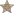

Portal:Featured content
Jump to navigation
Jump to search

Featured content in WikipediaFeatured content represents the best of Wikipedia, including articles, pictures, and other contributions that showcase excellent results of the collaborative efforts of Wikipedia. All featured content undergoes a thorough review process to ensure that it meets the highest standards in order to serve as the best example of our end goals. A small bronze star () in the top right corner of a desktop page indicates that the content is featured. This page gives links to all of Wikipedia's featured content. |
|
Lists of featured content
| Articles | Pictures | Lists | Topics | |
|---|---|---|---|---|
| Featured: | 5448 / T | 6,231 / T | 3431 / T | 162 / T |
| Criteria: | FA? / T | FP? / T | FL? / T | FT? / T |
| Candidates: | FAC / T | FPC / T | FLC / T | FTC / T |
| Removal: | FARC / T | FPR / T | FLRC / T | FTRC / T |
| Former: | 1,157 / T | FFP | 309 / T | FFT |
Newest featured content
- Washington State Route 522
- North-Eastern Area Command (RAAF)
- History of Tottenham Hotspur F.C.
- French battleship Courbet (1911)
- Battle of Auberoche
- Al-Mu'tasim
- Apollo 15 postal covers incident
- SMS Schlesien
- AirTrain JFK
- WAVES
- Siege of Berwick (1333)
- Irritator
- Pyramid of Unas
- Apollo 11
- Æthelberht, King of Wessex
- Overview of Meghan Trainor
- Overview of Tove Lo
- Ivalice
- Padma Bhushan
- 2006 Pacific hurricane season
- History of the Manhattan Project
- Final Fantasy series
- Laureus World Sports Awards
- Amy Adams
- Overview of Inna
- Current Consejo Mundial de Lucha Libre championships
- Emma Stone
- Battlecruisers of the Royal Navy
- Russell family (Passions)
- Interstate Highways in Michigan
- MLS Cup finals
- Category 2 Pacific hurricanes
- Albania international footballers
- Awards and nominations received by Jessica Chastain
- Hot Country Singles & Tracks number ones of 1995
- Awards and nominations received by Margaret
- Songs recorded by Meghan Trainor
- Lesley Manyathela Golden Boot
- Local Nature Reserves in Norfolk
- Longest-living members of the British royal family
- International cricket centuries by Rohit Sharma
- International goals scored by Radamel Falcao
- Municipalities of Baja California
- World Heritage sites in Albania
- Godflesh discography
- Edith Roosevelt
- Mantella baroni
- Rufous-headed ground roller
- Turgot map of Paris
- Assassination of Abraham Lincoln
- Carrie Chapman Catt
- Electric match
- Set design for Act IV of Rigoletto
- Calumma brevicorne
- Amber Mountain rock thrush
- Yellow-faced honeyeater
- Sooty oystercatcher
- Noisy pitta
- Scarlet myzomela
- Golden-headed cisticola